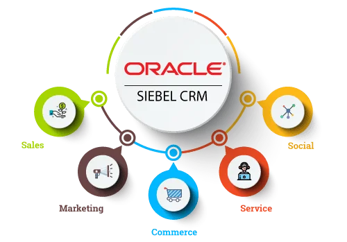
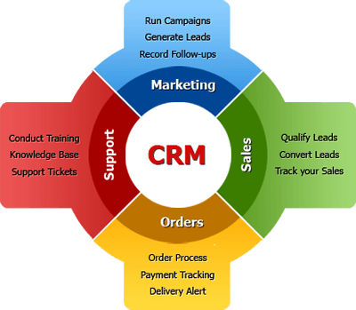
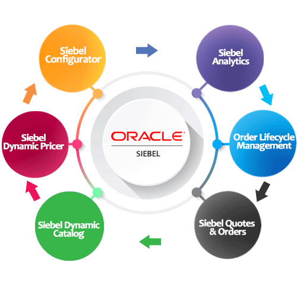
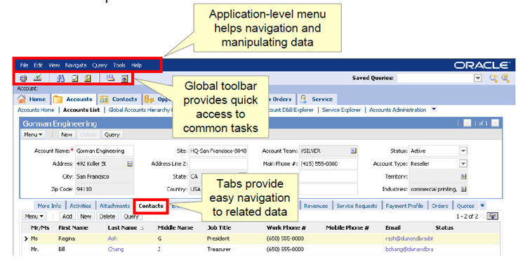

Welcome to Oracle Siebel CRM Training
This comprehensive 2-day course will transform you from a Siebel beginner into a confident administrator and configurator, capable of managing and customizing one of the world's most powerful CRM platforms.
What You'll Learn in This Module
- The fundamentals of Customer Relationship Management (CRM)
- Why CRM is critical for modern businesses
- Siebel's key features, benefits, and competitive advantages
- The Siebel architecture and how components work together
- How to navigate the Siebel user interface
- Setting up and managing users, roles, and responsibilities
Training Environment Details
You will be working in a live Siebel IP 21.7 environment throughout this course:
- Application URL:
https://siebeltraining.shreejientserv.in/siebel/app/ecommunications/enu
- Web Tools URL:
https://siebeltraining.shreejientserv.in/siebel/app/webtools/enu
- Your Username:
TRAINEE01 through TRAINEE10
- Password:
Welcome123
- Vertical: eCommunications (telecommunications industry)
Estimated reading time: 5 minutes
What is Customer Relationship Management?
Customer Relationship Management (CRM) is both a business strategy and a technology platform designed to manage all your company's interactions with current and potential customers.
CRM as a Business Strategy
Think of CRM as your company's "memory" – it remembers every customer, every conversation, every purchase, and every problem. But more importantly, it helps you use that information to build stronger, more profitable relationships.
The Three Pillars of CRM Strategy
-
Customer Focus: Move from transactional thinking to relationship building. Instead of just selling products, you're solving customer problems and anticipating their needs.
-
Process Optimization: Streamline how your sales, marketing, and service teams work. Eliminate duplicate work, reduce errors, and ensure everyone has access to the same information.
-
Data-Driven Decisions: Use customer data and analytics to make smarter business decisions, from targeting the right prospects to identifying upsell opportunities.
CRM as a Technology Platform
A CRM system like Siebel provides the tools to execute your CRM strategy. It centralizes customer information, automates workflows, and provides insights through reporting and analytics.

The continuous CRM cycle: Attract → Engage → Convert → Retain → Grow
Estimated reading time: 8 minutes
Why CRM is Critical for Modern Businesses
In today's competitive marketplace, businesses that don't effectively manage customer relationships are at a severe disadvantage. Here's why CRM has become essential.
üéØ Key Business Benefits
1. Increased Revenue
- Better lead conversion rates (up to 300% improvement)
- Identification of upsell and cross-sell opportunities
- Shorter sales cycles through automation
- More accurate sales forecasting
2. Improved Customer Satisfaction
- Faster response times to customer inquiries
- Personalized service based on customer history
- Proactive problem identification and resolution
- Consistent experience across all channels
üìä Real-World Example: Telecommunications Company
A major telecom provider (similar to the eCommunications vertical you'll be working in) implemented Siebel CRM and achieved:
- 35% reduction in customer churn by identifying at-risk customers before they left
- 40% improvement in first-call resolution for service requests
- $50M additional revenue from targeted marketing campaigns using customer segmentation
- 60% faster new product launches by coordinating sales, marketing, and service teams

Tangible benefits of CRM implementation across business functions
üí° Important Insight: CRM success isn't just about technology ‚Äì it requires organizational commitment, clear processes, and user adoption. The best CRM system is worthless if your team doesn't use it!
Estimated reading time: 10 minutes
Siebel CRM: Key Features and Benefits
Oracle Siebel CRM is an enterprise-grade platform that has been continuously refined over 25+ years. It powers some of the world's largest and most complex customer-facing operations.
What Makes Siebel Different?
1. Unmatched Flexibility and Configurability
Unlike simpler CRM systems, Siebel allows you to model virtually any business process without custom coding. Through its powerful configuration tools, you can:
- Create custom business objects and relationships
- Build complex workflows with branching logic
- Design industry-specific data models (financial services, healthcare, telecom, etc.)
- Adapt the UI to match your exact business requirements
Why this matters: You're not forcing your business to adapt to the software – the software adapts to your business.
2. Enterprise Scalability
Siebel is designed for large-scale deployments:
- Supports thousands of concurrent users without performance degradation
- Handles hundreds of millions of records (accounts, contacts, opportunities, etc.)
- Proven in organizations with 50,000+ employees using the system
- Multi-language and multi-currency support for global operations
3. Industry-Specific Capabilities
Siebel comes pre-configured for specific industries, including:
- Telecommunications: Order management, billing integration, network provisioning
- Financial Services: Wealth management, retail banking, insurance claims
- Healthcare: Patient engagement, claims processing, provider management
- Energy: Meter-to-cash processes, field service optimization
Each vertical includes data models, workflows, and UI screens tailored to that industry's unique needs.

Core capabilities that make Siebel the CRM choice for complex enterprises
Estimated reading time: 12 minutes
Siebel CRM Modules Overview
Siebel CRM is organized into functional modules that address different aspects of customer relationship management. Understanding these modules is key to navigating the system effectively.
Core Modules
üìà Sales Module
Purpose: Manage the entire sales process from lead to closed deal.
Key Objects:
- Leads: Potential customers who have expressed interest
- Opportunities: Qualified sales deals in your pipeline
- Quotes: Pricing proposals sent to customers
- Orders: Confirmed purchases
- Forecasts: Projected revenue based on pipeline
Typical Users: Sales representatives, sales managers, sales operations
üì¢ Marketing Module
Purpose: Plan, execute, and measure marketing campaigns.
Key Objects:
- Campaigns: Multi-channel marketing initiatives
- Segments: Target audience definitions based on criteria
- Programs: Series of related campaigns
- Responses: Customer reactions to marketing outreach
- Campaign ROI: Financial performance tracking
Typical Users: Marketing managers, campaign analysts, content creators
üõ†Ô∏è Service Module
Purpose: Handle customer support requests and field service operations.
Key Objects:
- Service Requests (SRs): Customer problems or questions
- Cases: Complex issues requiring investigation
- Solutions: Knowledge base articles for common problems
- Assets: Customer-owned equipment requiring service
- Service Contracts: Support agreements and SLAs
Typical Users: Call center agents, field technicians, service managers

The three core CRM modules work together to provide a 360-degree customer view
üìå Note for This Training: We're working in the eCommunications vertical, which primarily uses the Service module for managing customer support requests related to telecommunications services (internet, mobile, TV packages, etc.).
Estimated reading time: 10 minutes
Understanding Siebel Architecture
To effectively work with Siebel, you need to understand how its components fit together. Siebel uses a three-tier architecture that separates presentation, business logic, and data storage.
The Three-Tier Architecture
Tier 1: Web/Client Layer (Presentation)
What it does: Handles user interaction and displays data
- Web Browser: Most users access Siebel through a standard web browser (Chrome, Edge, Firefox)
- Mobile Apps: Native apps for iOS and Android devices
- Developer Client: Special desktop client for administrators and configurators
Key Point: The client is "thin" – it doesn't contain business logic or data. It's just responsible for rendering the UI and sending user actions to the server.
Tier 2: Application Layer (Business Logic)
What it does: Executes business rules, workflows, and data processing
- Siebel Server: Runs on Windows or Unix/Linux servers
- Components: Specialized processes for different functions (Workflow, EAI, Assignment Manager, etc.)
- Object Manager: Manages user sessions and executes business component logic
- Web Engine: Generates HTML pages for web users
Key Point: This tier is where your configuration lives – business components, workflows, validations, etc.
Tier 3: Data Layer (Storage)
What it does: Stores all customer data and system metadata
- Siebel Database: Typically Oracle Database, but can also be DB2, MS SQL Server
- Repository: Contains all configuration metadata (object definitions, UI layouts, etc.)
- Runtime Tables: Store actual customer data (accounts, contacts, opportunities, etc.)

Three-tier architecture: Clients connect to application servers, which manage data in the database
Estimated reading time: 10 minutes
How Data Flows Through Siebel
Let's follow what happens when a user performs a simple action, like viewing an account record. Understanding this flow helps you troubleshoot issues and optimize performance.
Example: User Clicks on an Account
-
User Action (Browser):
User clicks "Accounts" in the navigation menu
-
HTTP Request:
Browser sends a request to the Siebel Web Server
-
Object Manager Processing:
The Object Manager component receives the request and determines which Business Component (BC) is needed – in this case, the "Account" BC
-
SQL Generation:
The BC's definition (configured in Siebel Tools) is used to automatically generate a SQL query. For example:
SELECT
S_ORG_EXT.ROW_ID,
S_ORG_EXT.NAME,
S_ORG_EXT.LOC,
S_ORG_EXT.PHONE_NUM
FROM S_ORG_EXT
WHERE S_ORG_EXT.INTEGRATION_ID = '...'
-
Database Query:
SQL is sent to the database, which retrieves the matching records
-
Business Logic:
Object Manager applies any calculated fields, validations, or scripts defined on the BC
-
HTML Generation:
Web Engine uses the View and Applet definitions to format the data into HTML
-
Response to Browser:
HTML is sent back to the user's browser, which renders the account list
üí° Performance Insight: Most performance issues in Siebel stem from inefficient SQL queries. The better you configure your Business Components (choosing the right indexes, search specs, and fields), the faster queries will execute.
Estimated reading time: 8 minutes
Navigating the Siebel User Interface
The Siebel UI is designed for power users who work with customer data all day. Let's explore the key components and how to navigate efficiently.
Main UI Components
1. Application Bar (Top)
The application bar appears at the very top and contains:
- Application Selector: Switch between different Siebel applications (e.g., Call Center, Sales, Marketing)
- User Name: Shows who you're logged in as
- Help: Access to online documentation
- Logout: Sign out of Siebel
2. Site Map (Left Navigation)
This is your primary navigation tool. It's organized hierarchically:
- Screens: Top-level groupings (e.g., "Accounts", "Contacts", "Service Requests")
- Views: Sub-items under screens showing different perspectives on the data
Example Navigation Path:
Service Requests → Service Request List View → opens a list of all service requests
3. View Tabs
When you open multiple views, they appear as tabs across the top of the content area, similar to browser tabs. You can:
- Click tabs to switch between open views
- Close tabs you're done with (X button)
- Have multiple tabs open simultaneously for multitasking

Main components of the Siebel user interface
Estimated reading time: 7 minutes
Working with Views and Applets
A View is a complete page in Siebel, made up of smaller components called Applets. Understanding this relationship is crucial for both using and configuring Siebel.
What is a View?
A View is a complete screen layout. For example, "Account Detail View" shows everything about a single account. Views are organized into two main types:
List Views
Display multiple records in a grid/table format. Users can:
- Sort columns by clicking headers
- Search/filter records
- Select records to perform actions
- Page through large result sets
Example: "Service Request List View" shows all service requests matching your criteria
Form/Detail Views
Show detailed information about a single record, often with related data. Components include:
- Form applet: Shows fields for the main record
- Related lists: Show child records (e.g., an Account's Contacts)
- Activity threads: History of interactions
Example: "Account Form View" shows one account with all its details and related contacts, opportunities, service requests, etc.
What is an Applet?
An Applet is a reusable UI component that displays data from a Business Component. Think of it as a "widget" that can be placed on multiple Views.
Common Applet Types
- Form Applet: Shows fields in a vertical layout (label on left, value on right)
- List Applet: Shows multiple records in a grid
- Pick Applet: Special popup for selecting related records
- Chart Applet: Displays data visually (graphs, charts)
üîß Configuration Tip: When you later configure Siebel, you'll modify Applets to add/remove fields or change layouts. The same Applet can appear on multiple Views, so changes affect all those Views.
Estimated reading time: 9 minutes
Performing Common Tasks in Siebel
Let's walk through the essential tasks every Siebel user needs to master.
Searching for Records
Method 1: Simple Search
- Navigate to a list view (e.g., Accounts → All Accounts)
- Look for the search bar at the top of the list applet
- Enter your search term (e.g., a company name)
- Press Enter or click the Search button
Pro Tip: Use wildcards – *Smith finds all names ending in Smith
Method 2: Advanced Query
For complex searches across multiple fields:
- Click the "Query" button (funnel icon) in the applet toolbar
- This puts the list into "Query mode" – all columns become editable
- Enter criteria in multiple columns (e.g., Name =
*Corp AND City = Chicago)
- Click "Execute Query" to see results
Creating a New Record
- Navigate to the appropriate list view
- Click the "New" button in the toolbar
- A blank form appears – fill in required fields (marked with *)
- Click "Save" or press Ctrl+S
Important: Required fields must be filled before you can save. Validation rules may also prevent saving if data doesn't meet business rules.
Editing an Existing Record
- Find the record using search
- Click on the record to open the detail view (or drill down from the list)
- Click in any editable field and modify the value
- Save your changes (Ctrl+S)
Note: Some fields may be read-only (grayed out) due to business rules or your user permissions.
Estimated reading time: 8 minutes
Setting Up Users and Roles
Proper user management is critical for security, productivity, and license compliance. Siebel provides a sophisticated system for controlling who can access what.
User Management Concepts
User Account
The basic entity representing a person who logs into Siebel. Each user has:
- Login credentials: Username and password
- Employee record: Links the user to organizational data
- Responsibility: Determines what they can see and do
- Position: Their role in the org chart (for territory assignment, etc.)
Responsibility
A Responsibility is like a "role template" that bundles together:
- Views: Which screens the user can access
- Data Visibility: Which records they can see (via visibility rules)
- Functional Permissions: What actions they can perform
Example Responsibilities:
- Call Center Agent – access to service request management
- Sales Representative – access to opportunities and quotes
- Marketing Analyst – access to campaigns and segments
Responsibilities control what users can see and do in Siebel
Estimated reading time: 7 minutes
Creating a New User: Step-by-Step
Let's walk through the complete process of setting up a new user in Siebel.
Prerequisites
- You must be logged in with administrator privileges
- You should know which Responsibility to assign
- You should have the user's basic information (name, email, etc.)
Step 1: Navigate to User Administration
- Click the Site Map (hamburger menu icon)
- Navigate to: Administration - User → Users
- This opens the "User List View"
Step 2: Create the User Record
- Click the New button in the toolbar
- A blank user form appears. Fill in required fields:
- Login Name: Must be unique (e.g.,
jsmith)
- First Name: User's first name
- Last Name: User's last name
- Email: Valid email address
- Status: Set to "Active"
- Click Save
Step 3: Set Password
- With the user record still open, click the Password button in the toolbar
- A dialog appears – enter a temporary password
- Optionally check "User must change password at next login"
- Click OK
Step 4: Assign Responsibility
- Still on the user record, scroll down to the Responsibility applet
- Click New in that applet
- Use the pick applet (magnifying glass) to search for the appropriate Responsibility
- Select it and click OK
- Set Default to Yes if this is their primary responsibility
- Save the record
✅ User Created! The user can now log in with their username and password. They will see only the screens and data allowed by their Responsibility.
Estimated reading time: 10 minutes
Understanding Access Control in Siebel
Siebel's security model ensures users only see and modify data appropriate to their role. This is accomplished through multiple layers of control.
Access Control Layers
1. View-Level Access
Controlled by the user's Responsibility. If a View isn't in their Responsibility, they won't even see it in the navigation.
2. Record-Level Access (Visibility Rules)
Determines which specific records a user can see. Common rules:
- Organization visibility: Users see only records for their division/organization
- Position visibility: Users see records assigned to them or their team
- Personal visibility: Users see only their own records
Example: A sales rep might only see Opportunities where they're the owner or a team member, while their manager sees all Opportunities for the entire team.
3. Field-Level Access
Specific fields can be hidden or made read-only based on user role. This is configured at the Applet level.
4. Action-Level Access (Access Control Lists)
Controls whether users can perform specific actions like:
- Create new records
- Delete records
- Run workflows
- Export data
Estimated reading time: 8 minutes
Positions and Organizational Hierarchy
In Siebel, a Position represents a role within your organization's structure. Positions are critical for assignment rules, visibility, and reporting hierarchies.
Why Positions Matter
Positions serve several purposes:
- Assignment routing: Automatically route leads, cases, etc. to the right people
- Territory management: Define sales territories and coverage
- Visibility rules: Managers see their team's data
- Workflow approvals: Route approvals up the hierarchy

Positions form a tree structure mirroring your org chart
Estimated reading time: 6 minutes
Best Practices for User Setup
Proper user setup prevents security issues and ensures smooth operations. Follow these guidelines.
✅ User Setup Best Practices
- Use a naming convention: Consistent login names (e.g., first initial + last name)
- Enforce password policies: Require complex passwords and regular changes
- Principle of least privilege: Give users only the access they need
- Regular audits: Review user access quarterly and deactivate unused accounts
- Document responsibilities: Maintain clear documentation of what each Responsibility allows
Estimated reading time: 5 minutes
Understanding the eCommunications Vertical
For this training, you're working in the eCommunications vertical - Siebel's specialized solution for telecommunications providers.
What is eCommunications?
eCommunications is a pre-configured Siebel application tailored for telecom, cable, and internet service providers. It includes:
- Service request management for technical support
- Order management for new services and upgrades
- Billing inquiry handling
- Network trouble ticket integration
Estimated reading time: 5 minutes
Preparing for Configuration Work
Now that you understand how to use Siebel, you're ready to learn how to configure it. Here's what to expect.
The Configuration Mindset
Configuration is fundamentally different from coding. Instead of writing programs, you're:
- Declaring metadata that Siebel's engine interprets
- Building business rules without code (declarative)
- Assembling pre-built components in new ways
üí° Key Insight: About 80% of Siebel customization can be done through configuration alone, without any custom code. This makes changes faster, safer, and easier to maintain.
Estimated reading time: 4 minutes
Module Summary: Introduction to Oracle Siebel CRM
Congratulations! You've completed the first topic of your Siebel training. Let's review what you've learned.
✅ Key Takeaways
- CRM Fundamentals: You understand what CRM is and why it's critical for business success
- Siebel's Capabilities: You know Siebel's key features and competitive advantages
- Architecture: You understand the three-tier architecture and data flow
- Navigation: You can find your way around the Siebel UI efficiently
- Basic Operations: You can search, create, and edit records
- User Management: You understand how to create users and assign responsibilities
- Access Control: You know how Siebel controls what users can see and do
üìö What's Next?
In the next topic, Configuring Siebel Applications, you'll learn:
- How to use Siebel Web Tools for configuration
- Understanding the Workspace development model
- Creating and modifying Business Components
- Building workflows to automate processes
- Customizing the user interface
üéØ Ready to Practice? Before moving to the next topic, make sure you've logged into the training environment and explored the UI. Hands-on experience reinforces what you've learned!
Quick Reference Card
| Training URL: |
https://siebeltraining.shreejientserv.in/siebel/app/ecommunications/enu |
| Web Tools URL: |
https://siebeltraining.shreejientserv.in/siebel/app/webtools/enu |
| Your Login: |
TRAINEE01-10 / Welcome123 |
Module completion time: ~2 hours